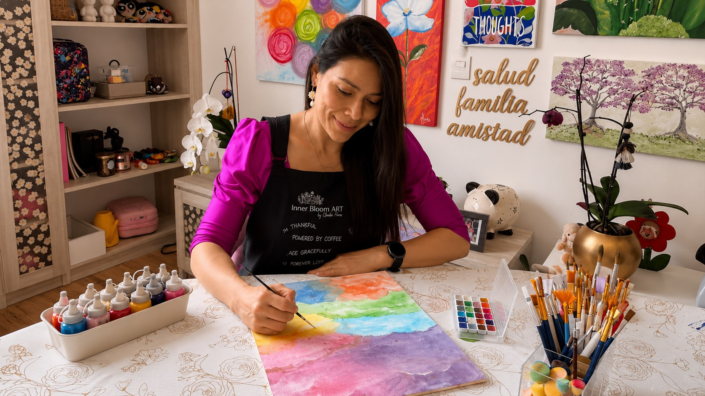
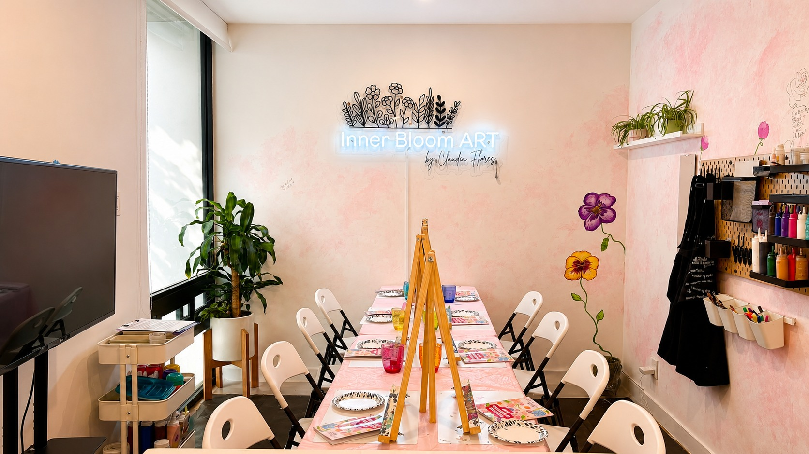
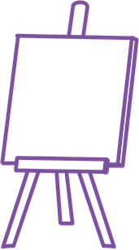

Antes
Buscaba respuestas afuera y aprendí a ser fuerte, pero también a sostenerlo todo sola.
Creé Inner Bloom Art para acompañar a mujeres que desean reconectar consigo mismas desde un espacio amoroso, creativo y consciente.
Creo profundamente en el poder del arte para sanar, expresar lo que a veces no se puede decir y volver a sentirnos en casa con nuestra esencia.

Buscaba respuestas afuera y aprendí a ser fuerte, pero también a sostenerlo todo sola.

Una etapa difícil me llevó a preguntarme quién era y qué necesitaba realmente.
El arte se convirtió en un refugio, mi forma de volver a mí y de sanar desde adentro. Así nació Inner Bloom Art.
Nació del deseo de crear el espacio que a mí me hubiera gustado encontrar en mis propios momentos de confusión, duda y búsqueda.
Un lugar donde las mujeres puedan pausar, sentir, expresarse y recordar que no tienen que hacerlo todo solas.


El arte puede ser una forma de sanar.

Ninguna mujer debería apagarse para encajar.

La pausa también es parte del crecimiento.

El amor propio se construye todos los días.

Siempre es posible volver a florecer.
Experiencias diseñadas para que sanes a tu ritmo desde casa, con materiales, meditaciones y ejercicios creativos.

Encuentros íntimos y transformadores donde el arte, la reflexión y la conexión te llevan a volver a ti.
Un espacio seguro y amoroso donde puedes compartir, inspirarte y sentirte acompañada en tu proceso.


No necesitas
saber pintar
Experiencias online
y presenciales
Acompañamiento
amoroso
Comunidad en
Skool